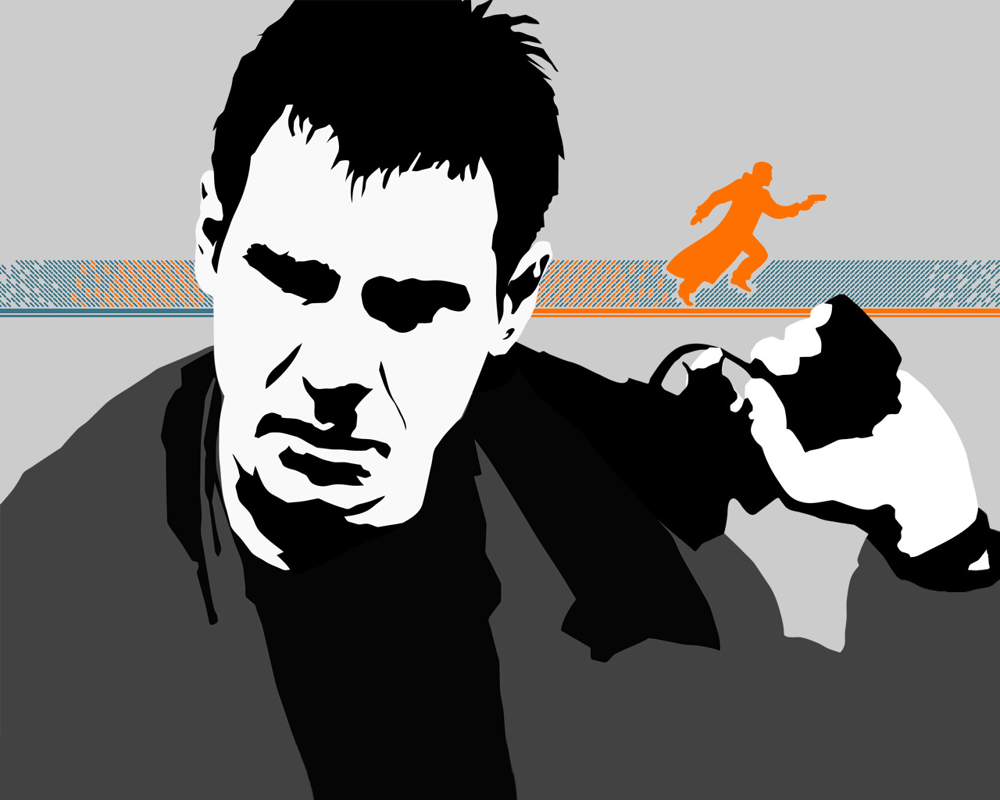

Characters
The "No" Arguments #
Ever since the movie was released, people watching it has been divided in two; those who believe Deckard being a replicant and those contrary to that belief. In a seemingly endless discussion here are the arguments from the "no"-side of the debate.
-
A major point of the film was to show Deckard (The Common Man) the value of life. "What's it like to live in fear?" If all the main characters are replicants, the contrast between humans and replicants is lost.
-
Having Deckard as a replicant implies a conspiracy between the police and Tyrell.
-
Replicants were outlawed on Earth and it seems unlikely that a replicant would have an ex-wife.
-
Could you trust a replicant to kill other replicants? Why did the police trust Deckard?
-
If Deckard was a replicant designed to be a Blade Runner, why would they give him bad memories of the police force? Wouldn't it be more effective if he were loyal and happy about his work?
-
Deckard was not a replicant in Do Androids Dream of Electric Sheep, although he has another Blade Runner test him at one point just to be sure.
-
Rachael had an implanted unicorn dream and Deckard's reverie in BRDC was a result of having seen her implants. Gaff may have seen Rachael's implants at the same time Deckard did, perhaps while they were at Tyrell's.
The "Yes" Arguments #
-
Ridley Scott and Harrison Ford have stated that Deckard was meant to be a replicant. In Details (US) October 1992 Ford says: "Blade Runner was not one of my favorite films. I tangled with Ridley. The biggest problem was that at the end, he wanted the audience to find out that Deckard was a replicant. I fought that because I felt the audience needed somebody to cheer for."
-
The shooting script had a voice-over where Deckard says, "I knew it on the roof that night. We were brothers, Roy Batty and I".
-
Gaff knew that Deckard dreamt of a unicorn, therefore Gaff knew what dreams that Deckard had been implanted with. (BRDC only)
-
Replicants have a penchant for photographs, because it gives them a tie to their non-existent past. Deckard's flat is packed with photos, and none of them are recent or in color. Despite her memories, Rachael needed a photo as an emotional cushion. Likewise, Deckard would need photos, despite his memory implants. Rachael plays the piano, and Deckard has a piano in his flat.
-
Gaff tells him in the end, "You've done a man's job, sir!". Early drafts of the script have him then add: "But are you sure you are man? It's hard to be sure who's who around here."
-
Bryant's threat "If you're not a cop, you're little people" might be an allusion to Deckard being created solely for police work.
-
Gaff seems to follow Deckard everywhere - he is at the scene of all the Replicant retirings almost immediately. Gaff is always with Deckard when the chief is around. This suggests that Gaff is the real Blade Runner, and that Deckard is only a tool Gaff uses for the dirty work.
-
Deckard's eyes glow (yellow-orange) when he tells Rachael that he wouldn't go after her, "but someone would". Deckard is standing behind Rachael, and he's out of focus.
-
Roy knew Deckard's name, yet he was never told it.
-
The police would not risk a human to hunt four powerful replicants, particularly since replicants were designed for such dangerous work. Of course Deckard would have to think he was human or he might not be willing to hunt down other replicants.
-
And of course Ridley Scott's statment in a recent interview.
By Multiple Sources